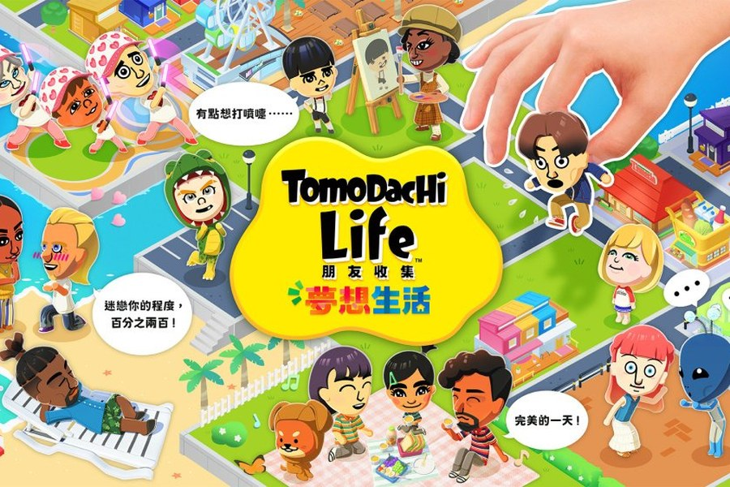

游戏 Demo
游戏 Demo
ECHO（回声）
一款治愈系 2D 叙事解谜游戏，采用 Godot 4.6 引擎开发，已完成可玩 Demo（Windows / macOS 双平台）、宣传 PV 与 KV 主视觉。核心体验围绕"双时空压力转化循环"展开，通过 AI NPC 系统、双线叙事（现实/梦境）和独特的"回声"机制，为玩家提供情感治愈的体验。重点展示 NPC 人设演进系统与 AI 对话架构设计。
游戏 Demo
一款治愈系 2D 叙事解谜游戏，采用 Godot 4.6 引擎开发，已完成可玩 Demo（Windows / macOS 双平台）、宣传 PV 与 KV 主视觉。核心体验围绕"双时空压力转化循环"展开，通过 AI NPC 系统、双线叙事（现实/梦境）和独特的"回声"机制，为玩家提供情感治愈的体验。重点展示 NPC 人设演进系统与 AI 对话架构设计。
 游戏 Demo
游戏 Demo
基于刘慈欣短篇小说《山》改编的 3D 探索解谜游戏，Unreal Engine 5.8 开发。玩家扮演封装着硅基科学家波塞冬博士意识碎片的微型机器人「泡灵」，在深海废墟中苏醒，通过体型控制、意识分裂解谜与光点收集，把文明的火种传回地心。我担任主策划 / 项目负责人，负责项目管理、策划案与叙事、UE 工程搭建与场景后处理。重点展示世界观建构、机制三段式教学设计与关卡空间图纸。
 Game Jam
Game Jam
48 小时 GGJ 翌光计划作品（THEME: GROW）。极简手感的 2D 横板跳跃 × 叙事游戏，只有移动与单段跳跃、一击即死、触碰灯笼秒级重生；以四季章节承载武汉的城市记忆——过早的米酒、过江的轮渡、封城的樱花、东湖的日出。已完成在线试玩、实机演示与程序化 Web Audio 音乐。
 游戏拆解案
游戏拆解案
全面拆解网易开放世界武侠游戏《燕云十六声》的设计方法论。按剧情叙事、任务设计、关卡设计、玩法机制四大板块逐层分析：从燕云十六州的历史母题与"世界即叙事"，到任务按循环层级的七类划分，再到官方"反大而空"的关卡理念与「无明春山」案例，最后列出 8 项可与 AI 融合的设计机会点。

游戏拆解案全面剖析任天堂社交模拟游戏《Tomodachi Life》的 NPC 系统与 AI 玩法设计。涵盖 Mii 创建系统、16 种人格类型、8 阶段关系系统、三层 AI 架构、梦想系统、整活生态等内容，并与《模拟人生4》进行多维度对比分析。
 游戏拆解案
游戏拆解案
以《恋与深空》T0 级人气角色祁煜为样本，拆解女性向角色如何从「人设」变成「IP」。分四层展开：角色性格分层与视觉符号系统、美术辨识度与反差设定的设计取舍、卡池 / 周边 / 联名 / 机构背书构成的四层变现结构，以及海内外破圈路径与路人吸引力来源，最后给出可复用的角色商业化方法论与风险边界。
累计体验 60+ 款不同类型游戏，覆盖开放世界、射击竞技、模拟经营、叙事、卡牌策略等品类，从中学习游戏设计理念与玩家体验。以下是主要游戏经历：
原版、服务器，起床战争、空岛、SMP 生存、模组科技服，插件生存、建筑、红石工程，各类模组。
完成主线与大量侠迹支线，地图整体探索度 80%，收集武学、奇遇，解锁大部分游戏成就。
单机故事全流程，完成全部主线、支线与收集内容，解锁全部单机成就，城市漫游、特技与彩蛋。
本体、财富岛、乐高 DLC，跑完绝大多数赛事与 PR 特技挑战，收集大量车辆，解锁大部分成就。
爆破、团队竞技、生化、挑战，熟悉经典地图，排位意识。